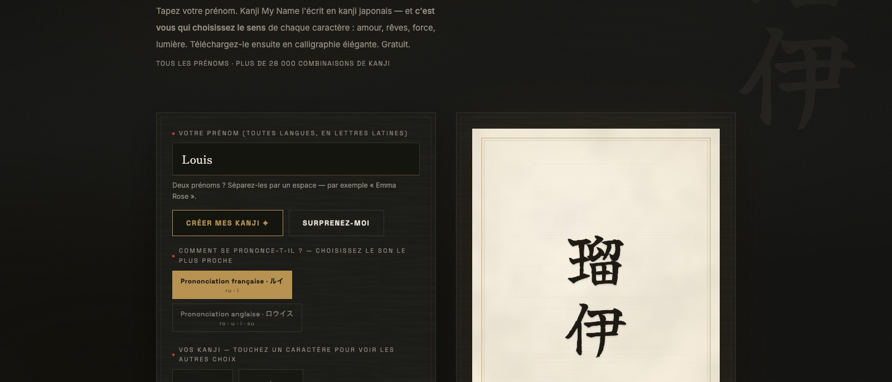

Kanji My Name adds French, Italian and Indonesian,
reading each name the way that country pronounces it

KUGA Inc. (Nagoya, Japan; CEO Hitomi Kuga) has added French, Italian and Indonesian to Kanji My Name, its web service that turns a name into meaningful Japanese kanji (ateji) and renders it as calligraphy-style art. Alongside English, the whole service is now available in each language: the generator, its buttons and guidance, and the meaning of every kanji.
French: kanji.kugainc.com/fr/ / Italian: kanji.kugainc.com/it/ / Indonesian: kanji.kugainc.com/id/
Same spelling, different sound
A name can be spelled the same in two countries and still sound different. Louis is pronounced "Lwee" in France, which Japanese writes as ルイ (rui). Type Louis into the French version of Kanji My Name and the kanji are built from that French sound from the start. You can still switch to an English-style reading if you prefer.
We chose 50 popular names from each country, 150 in all. We wrote each one in katakana the way that country pronounces it: Lorenzo from Italy becomes ロレンツォ (rorentso), and Putri from Indonesia becomes プトゥリ (puturi), also written プトリ. For every country we checked the Japanese rules for writing foreign words and how Japanese-language encyclopedias, including Japanese Wikipedia, actually spell these names. Each name also has its own page, in that language, showing it in katakana, hiragana and kanji with the meaning of every character.
Kanji meanings in your own language
All 285 kanji meanings have been translated into each of the three languages (love becomes amour, amore and cinta). Because these characters go into people's names, we avoided words that may be read differently from one country to another and chose plain, everyday words instead. Prices are written the way each country usually writes them; the price itself is the same as in the English version.
At least two kanji to choose from, for every sound
Kanji My Name lists kanji that match the sounds of a name and lets you choose the meaning of each character. With this update, every sound now offers at least two kanji, a rule that applies to every language, English included. As before, we never use characters with negative meanings or that give an unnatural impression.
At a glance
Name: Kanji My Name
Languages: English, French, Italian, Indonesian
Price: free, no account needed. Premium (all fonts and styles) is a one-time $4.99
Works on: any modern browser on desktop or mobile (names are processed in your browser and never sent to a server)
Operated by: KUGA Inc.
What's next
We will add more names for each country as we see how people find these pages in search.
About KUGA Inc.
KUGA Inc. is a small web company based in Nagoya, Japan, that plans, builds and runs its own web services and designs websites for clients. Its services include NETDELINK, a multilingual landing-page generator for immigration lawyers; Dance Map Japan, a nationwide directory of dance studios; and Usamimi Web Design, a website production service. Being small lets the team move fast without cutting corners.
Company: KUGA Inc.（くうが株式会社）／CEO: Hitomi Kuga／Address: Dai-2 Mori Bldg. 401, 4-24-5 Meieki, Nakamura-ku, Nagoya, Aichi 450-0002, Japan／Web: kugainc.com/en